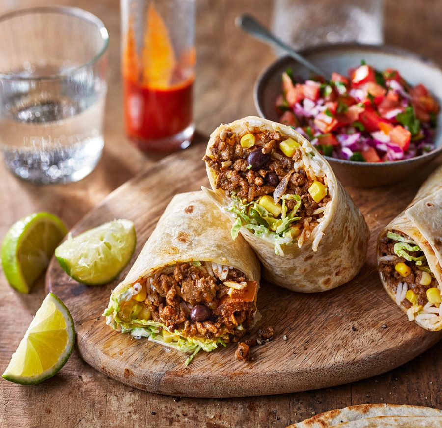

Ingredients

- 4 large flour tortillas
- 1 pound (450g) of ground beef or shredded chicken (cooked and seasoned)
- 1 cup of cooked rice
- 1 cup of canned black beans (drained and rinsed)
- 1 cup of shredded cheddar or Monterey Jack cheese
- 1/2 cup of diced tomatoes
- 1/2 cup of diced onions
- 1/4 cup of chopped fresh cilantro
- 1/4 cup of sour cream
- 1 tablespoon of vegetable oil
- 1 tablespoon of taco seasoning
- Salt and pepper to taste
Instructions
- In a large skillet, heat the vegetable oil over medium heat. Add the diced onions and sauté until they become translucent.
- Add the ground beef or shredded chicken to the skillet and cook until it's no longer pink. If using ground beef, break it up into smaller pieces as it cooks. Season the meat with taco seasoning, salt, and pepper, according to your taste.
- Once the meat is cooked, add the black beans and cooked rice to the skillet. Stir everything together and cook for an additional 2-3 minutes to allow the flavors to meld. Remove from heat.
- Warm the flour tortillas in a dry skillet or microwave them for a few seconds until they are pliable.
- To assemble the burritos, place a tortilla on a clean surface. Spoon a portion of the meat and rice mixture onto the tortilla, leaving some space around the edges. Sprinkle some shredded cheese, diced tomatoes, and chopped cilantro on top.
- Fold the sides of the tortilla inward, then roll it up tightly from the bottom to enclose the filling. Repeat this process for the remaining tortillas and filling.
- If desired, lightly heat the assembled burritos in a skillet or oven to melt the cheese and warm them through.
- Serve the burritos with a dollop of sour cream and any additional toppings you prefer, such as salsa, guacamole, lettuce, or sliced jalapeños.
Enjoy your homemade burritos!